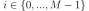

numpy.linalg.eig¶
-
numpy.linalg.eig(a)[source]¶ Compute the eigenvalues and right eigenvectors of a square array.
- Parameters
- a(…, M, M) array
Matrices for which the eigenvalues and right eigenvectors will be computed
- Returns
- w(…, M) array
The eigenvalues, each repeated according to its multiplicity. The eigenvalues are not necessarily ordered. The resulting array will be of complex type, unless the imaginary part is zero in which case it will be cast to a real type. When a is real the resulting eigenvalues will be real (0 imaginary part) or occur in conjugate pairs
- v(…, M, M) array
The normalized (unit “length”) eigenvectors, such that the column
v[:,i]is the eigenvector corresponding to the eigenvaluew[i].
- Raises
- LinAlgError
If the eigenvalue computation does not converge.
See also
Notes
New in version 1.8.0.
Broadcasting rules apply, see the
numpy.linalgdocumentation for details.This is implemented using the
_geevLAPACK routines which compute the eigenvalues and eigenvectors of general square arrays.The number w is an eigenvalue of a if there exists a vector v such that
dot(a,v) = w * v. Thus, the arrays a, w, and v satisfy the equationsdot(a[:,:], v[:,i]) = w[i] * v[:,i]for .The array v of eigenvectors may not be of maximum rank, that is, some of the columns may be linearly dependent, although round-off error may obscure that fact. If the eigenvalues are all different, then theoretically the eigenvectors are linearly independent. Likewise, the (complex-valued) matrix of eigenvectors v is unitary if the matrix a is normal, i.e., if
dot(a, a.H) = dot(a.H, a), where a.H denotes the conjugate transpose of a.Finally, it is emphasized that v consists of the right (as in right-hand side) eigenvectors of a. A vector y satisfying
dot(y.T, a) = z * y.Tfor some number z is called a left eigenvector of a, and, in general, the left and right eigenvectors of a matrix are not necessarily the (perhaps conjugate) transposes of each other.References
G. Strang, Linear Algebra and Its Applications, 2nd Ed., Orlando, FL, Academic Press, Inc., 1980, Various pp.
Examples
>>> from numpy import linalg as LA
(Almost) trivial example with real e-values and e-vectors.
>>> w, v = LA.eig(np.diag((1, 2, 3))) >>> w; v array([1., 2., 3.]) array([[1., 0., 0.], [0., 1., 0.], [0., 0., 1.]])
Real matrix possessing complex e-values and e-vectors; note that the e-values are complex conjugates of each other.
>>> w, v = LA.eig(np.array([[1, -1], [1, 1]])) >>> w; v array([1.+1.j, 1.-1.j]) array([[0.70710678+0.j , 0.70710678-0.j ], [0. -0.70710678j, 0. +0.70710678j]])
Complex-valued matrix with real e-values (but complex-valued e-vectors); note that
a.conj().T == a, i.e., a is Hermitian.>>> a = np.array([[1, 1j], [-1j, 1]]) >>> w, v = LA.eig(a) >>> w; v array([2.+0.j, 0.+0.j]) array([[ 0. +0.70710678j, 0.70710678+0.j ], # may vary [ 0.70710678+0.j , -0. +0.70710678j]])
Be careful about round-off error!
>>> a = np.array([[1 + 1e-9, 0], [0, 1 - 1e-9]]) >>> # Theor. e-values are 1 +/- 1e-9 >>> w, v = LA.eig(a) >>> w; v array([1., 1.]) array([[1., 0.], [0., 1.]])